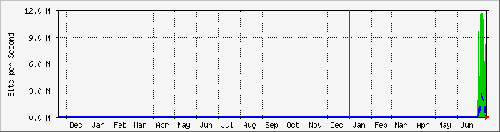

FortiGate100D WAN(ether 6) Enlace PtP Jalife - FiberCorp/Flow (300M) - Central Corrientes
| Equipo: | Fortigate 100D ERSA Corrientes Central |
| Mantenido por: | redes@ersaurbano.com |
| Descripcion: | Port 6 |
| Tipo de puerta: | ethernetCsmacd (6) |
| Nombre de puerta: | port6 |
| Max Speed: | 125.0 MBytes/s |
| Ip: | 192.168.100.2 (No DNS name) |
The statistics were last updated Thursday, 14 July 2022 at 9:16,
at which time 'ERSA-nodo2' had been up for 11 days, 22:32:32.
`Daily' Graph (5 Minute Average)

|
Max |
Average |
Current |
| In |
51.8 Mb/s (5.2%) |
11.2 Mb/s (1.1%) |
18.5 Mb/s (1.8%) |
| Out |
32.1 Mb/s (3.2%) |
2421.2 kb/s (0.2%) |
3429.5 kb/s (0.3%) |
`Weekly' Graph (30 Minute Average)
|
Max |
Average |
Current |
| In |
75.4 Mb/s (7.5%) |
8516.9 kb/s (0.9%) |
22.8 Mb/s (2.3%) |
| Out |
26.8 Mb/s (2.7%) |
1527.4 kb/s (0.2%) |
3281.9 kb/s (0.3%) |
`Monthly' Graph (2 Hour Average)
|
Max |
Average |
Current |
| In |
30.9 Mb/s (3.1%) |
8531.9 kb/s (0.9%) |
5392.4 kb/s (0.5%) |
| Out |
15.2 Mb/s (1.5%) |
1512.6 kb/s (0.2%) |
355.8 kb/s (0.0%) |
`Yearly' Graph (1 Day Average)

|
Max |
Average |
Current |
| In |
11.7 Mb/s (1.2%) |
7904.4 kb/s (0.8%) |
10.1 Mb/s (1.0%) |
| Out |
2501.9 kb/s (0.3%) |
1386.2 kb/s (0.1%) |
2409.8 kb/s (0.2%) |
| GREEN ### |
Incoming Traffic in Bits per Second |
| BLUE ### |
Outgoing Traffic in Bits per Second |